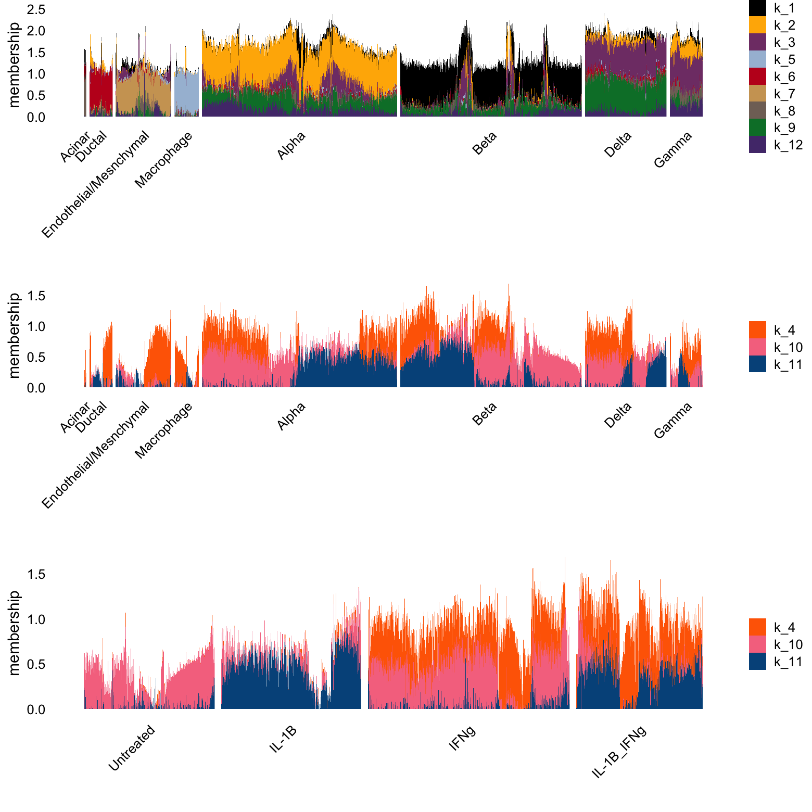

Last updated: 2025-06-23
Checks: 6 1
Knit directory:
single-cell-jamboree/analysis/
This reproducible R Markdown analysis was created with workflowr (version 1.7.1). The Checks tab describes the reproducibility checks that were applied when the results were created. The Past versions tab lists the development history.
The R Markdown file has unstaged changes. To know which version of
the R Markdown file created these results, you’ll want to first commit
it to the Git repo. If you’re still working on the analysis, you can
ignore this warning. When you’re finished, you can run
wflow_publish to commit the R Markdown file and build the
HTML.
Great job! The global environment was empty. Objects defined in the global environment can affect the analysis in your R Markdown file in unknown ways. For reproduciblity it’s best to always run the code in an empty environment.
The command set.seed(1) was run prior to running the
code in the R Markdown file. Setting a seed ensures that any results
that rely on randomness, e.g. subsampling or permutations, are
reproducible.
Great job! Recording the operating system, R version, and package versions is critical for reproducibility.
Nice! There were no cached chunks for this analysis, so you can be confident that you successfully produced the results during this run.
Great job! Using relative paths to the files within your workflowr project makes it easier to run your code on other machines.
Great! You are using Git for version control. Tracking code development and connecting the code version to the results is critical for reproducibility.
The results in this page were generated with repository version 2e7cdf0. See the Past versions tab to see a history of the changes made to the R Markdown and HTML files.
Note that you need to be careful to ensure that all relevant files for
the analysis have been committed to Git prior to generating the results
(you can use wflow_publish or
wflow_git_commit). workflowr only checks the R Markdown
file, but you know if there are other scripts or data files that it
depends on. Below is the status of the Git repository when the results
were generated:
Untracked files:
Untracked: data/GSE156175_RAW/
Untracked: data/panc_cyto_lsa_tm_k12.rds
Untracked: data/pancreas_cytokine_lsa.Rdata
Untracked: output/panc_cyto_lsa_res/
Unstaged changes:
Modified: analysis/pancreas_cytokine_mf_comparison.Rmd
Note that any generated files, e.g. HTML, png, CSS, etc., are not included in this status report because it is ok for generated content to have uncommitted changes.
These are the previous versions of the repository in which changes were
made to the R Markdown
(analysis/pancreas_cytokine_mf_comparison.Rmd) and HTML
(docs/pancreas_cytokine_mf_comparison.html) files. If
you’ve configured a remote Git repository (see
?wflow_git_remote), click on the hyperlinks in the table
below to view the files as they were in that past version.
| File | Version | Author | Date | Message |
|---|---|---|---|---|
| html | 2e7cdf0 | Peter Carbonetto | 2025-06-23 | Updated the Structure plots in the pancreas_cytokine_mf_comparison analysis. |
| Rmd | e7ffd05 | Peter Carbonetto | 2025-06-23 | wflow_publish("pancreas_cytokine_mf_comparison.Rmd", verbose = T, |
| Rmd | 546d291 | Peter Carbonetto | 2025-06-23 | Improved the structure plots for the topic model with k=12 in the pancreas_cytokine_mf_comparison analysis. |
| Rmd | 7af0ecd | Eric Weine | 2025-06-17 | added umap plot to clustering |
| Rmd | ba07b39 | Eric Weine | 2025-06-16 | added pancreas cytokine mf comparison |
| html | ba07b39 | Eric Weine | 2025-06-16 | added pancreas cytokine mf comparison |
This is our initial NMF analysis of ther Stancill 2021 LSA data set.
Load the packages used in this analysis:
library(Matrix)
library(readr)
library(dplyr)
library(fastTopics)
library(log1pNMF)
library(ggplot2)
# Warning: package 'ggplot2' was built under R version 4.4.1
library(cowplot)Load the data set:
load("../data/pancreas_cytokine_lsa.Rdata")
barcodes <- as.data.frame(barcodes)
clusters <- factor(barcodes$celltype,
c("Acinar","Ductal","Endothelial/Mesnchymal","Macrophage",
"Alpha","Beta","Delta","Gamma"))
conditions <- factor(barcodes$condition,
c("Untreated","IL-1B","IFNg","IL-1B_IFNg"))Fit the log1p models:
cc_vec <- c(1)
K_vec <- c(12, 15)
init_method_vec <- c("rank1")
for (init_method in init_method_vec) {
for (K in K_vec) {
for (cc in cc_vec) {
set.seed(1)
fit <- fit_poisson_log1p_nmf(
Y = counts,
K = K,
cc = cc,
init_method = init_method,
loglik = "exact",
control = list(maxiter = 250)
)
readr::write_rds(
fit,
glue::glue("results/lsa_pancreas_cytokine_log1p_c{cc}_{init_method}_init_K{K}.rds")
)
}
}
}Fit the topic models:
set.seed(1)
tm_k12 <- fit_poisson_nmf(
X = as(counts, "CsparseMatrix"),
k = 12,
control = list(nc = 7)
)
set.seed(1)
tm_k15 <- fit_poisson_nmf(
X = as(counts, "CsparseMatrix"),
k = 15,
control = list(nc = 7)
)Here, I attempt to separate out fitted topics based on their association with either celltype or treatment.
tm_k12 <- read_rds("../output/panc_cyto_lsa_res/tm_k12.rds")The topic model appears to have more factors that are specific to celltype, and fewer that seem to capture the treatment effects.
set.seed(1)
celltype_topics <- c(2:3,5:11)
other_topics <- c(1,4,12)
topic_colors <- fastTopics:::kelly()[c(2:12,14)]
i <- c(sample(which(clusters == "Beta"),800),
which(clusters != "Beta"))
L <- poisson2multinom(tm_k12)$L
p1 <- structure_plot(L[i,],grouping = clusters[i],gap = 15,n = Inf,
topics = celltype_topics,colors = topic_colors)$plot
p2 <- structure_plot(L[i,],grouping = clusters[i],gap = 15,n = Inf,
topics = other_topics,colors = topic_colors)$plot
p3 <- structure_plot(L[i,],grouping = conditions[i],gap = 20,n = Inf,
topics = other_topics,colors = topic_colors)$plot
plot_grid(p1,p2,p3,nrow = 3,ncol = 1,rel_heights = c(3.3,3,2))
| Version | Author | Date |
|---|---|---|
| 2e7cdf0 | Peter Carbonetto | 2025-06-23 |
Topic 1 appears to be non-IL-1B specific, whereas topic 4 appears to be a general cytokine effect (but perhaps moreso capturing the effects of IL-1B).
Let’s now look at the results from the Poisson log1p NMF, with \(K = 12\).
log1p_k12 <- read_rds(file.path("../output/panc_cyto_lsa_res",
"lsa_pancreas_cytokine_log1p_c1_rank1_init_K12.rds"))Here are the factors that appeared most correlated with cell type.
scale_cols <- function (A, b)
t(t(A) * b)
set.seed(1)
celltype_topics = c(1,2,3,5,6,7,8,9)
topic_colors <- fastTopics:::kelly()[c(2:12,14)]
L <- log1p_k12$LL
d <- apply(L,2,max)
L <- scale_cols(L,1/d)
p1 <- structure_plot(L[i,],grouping = clusters[i],gap = 15,n = Inf,
topics = celltype_topics,colors = topic_colors)$plot +
labs(y = "membership",fill = "")
p2 <- structure_plot(L[i,],grouping = clusters[i],gap = 15,n = Inf,
topics = c(4,10,11,12),colors = topic_colors)$plot +
labs(y = "membership",fill = "")
p3 <- structure_plot(L[i,],grouping = conditions[i],gap = 30,n = Inf,
topics = c(4,10,11,12),colors = topic_colors)$plot +
labs(y = "membership",fill = "")
plot_grid(p1,p2,p3,nrow = 3,ncol = 1)
| Version | Author | Date |
|---|---|---|
| 2e7cdf0 | Peter Carbonetto | 2025-06-23 |
NOTE: UPDATE THIS TEXT. The pockets of purple and yellow in the beta cell cluster may represent cells that were misclassified (though it is very hard to tell). Here, it appears that the pink factor is specific to conditions that are not treated with IL-1B, where the blue factor is specific to conditions treated with IL-1B. The orange factor appears specific to conditions treated with IFNg. The condition with both treatments has both the orange and the blue factors.
tm_fit15 <- readr::read_rds("../data/panc_cyto_lsa_res/tm_k15.rds")structure_plot(tm_fit15, grouping = barcodes$celltype, gap = 20)
# Treatment specific factors:
# k2
# k8
# k9
# k10
# k12
# k14
# k15
# celltype specific factors:
# k1
# k3
# k4
# k5
# k6
# k7
# k11
# k13structure_plot(
tm_fit15, grouping = barcodes$condition, gap = 20,
topics = paste0("k", c(2, 8, 9, 10, 12, 14, 15))
)Here, it appears that the pink factor (k10) and grey (k8) is mostly specific to the untreated condition, the dark orange (k14) is specific to IL-1B, the maroon (k15) is represented in all treated conditions.
log1p_fit15 <- readr::read_rds("../data/panc_cyto_lsa_res/lsa_pancreas_cytokine_log1p_c1_rank1_init_K15.rds")normalized_structure_plot(log1p_fit15, grouping = barcodes$celltype, gap = 20, n = Inf)
sessionInfo()
# R version 4.4.0 (2024-04-24)
# Platform: aarch64-apple-darwin20
# Running under: macOS Ventura 13.5
#
# Matrix products: default
# BLAS: /Library/Frameworks/R.framework/Versions/4.4-arm64/Resources/lib/libRblas.0.dylib
# LAPACK: /Library/Frameworks/R.framework/Versions/4.4-arm64/Resources/lib/libRlapack.dylib; LAPACK version 3.12.0
#
# locale:
# [1] en_US.UTF-8/en_US.UTF-8/en_US.UTF-8/C/en_US.UTF-8/en_US.UTF-8
#
# time zone: America/New_York
# tzcode source: internal
#
# attached base packages:
# [1] stats graphics grDevices utils datasets methods base
#
# other attached packages:
# [1] cowplot_1.1.3 ggplot2_3.5.2 log1pNMF_0.1-4 fastTopics_0.7-24
# [5] dplyr_1.1.4 readr_2.1.5 Matrix_1.7-0
#
# loaded via a namespace (and not attached):
# [1] gtable_0.3.6 xfun_0.52 bslib_0.9.0
# [4] htmlwidgets_1.6.4 ggrepel_0.9.6 lattice_0.22-6
# [7] tzdb_0.4.0 quadprog_1.5-8 vctrs_0.6.5
# [10] tools_4.4.0 generics_0.1.3 parallel_4.4.0
# [13] tibble_3.2.1 pkgconfig_2.0.3 data.table_1.17.0
# [16] SQUAREM_2021.1 RcppParallel_5.1.10 lifecycle_1.0.4
# [19] truncnorm_1.0-9 farver_2.1.2 compiler_4.4.0
# [22] stringr_1.5.1 git2r_0.33.0 progress_1.2.3
# [25] munsell_0.5.1 RhpcBLASctl_0.23-42 httpuv_1.6.15
# [28] htmltools_0.5.8.1 sass_0.4.10 yaml_2.3.10
# [31] lazyeval_0.2.2 plotly_4.10.4 crayon_1.5.3
# [34] later_1.4.2 pillar_1.10.2 jquerylib_0.1.4
# [37] whisker_0.4.1 tidyr_1.3.1 MASS_7.3-61
# [40] uwot_0.2.3 cachem_1.1.0 gtools_3.9.5
# [43] tidyselect_1.2.1 digest_0.6.37 Rtsne_0.17
# [46] stringi_1.8.7 reshape2_1.4.4 purrr_1.0.4
# [49] ashr_2.2-66 labeling_0.4.3 rprojroot_2.0.4
# [52] fastmap_1.2.0 grid_4.4.0 colorspace_2.1-1
# [55] cli_3.6.5 invgamma_1.1 magrittr_2.0.3
# [58] withr_3.0.2 prettyunits_1.2.0 scales_1.3.0
# [61] promises_1.3.2 rmarkdown_2.29 httr_1.4.7
# [64] startupmsg_0.9.6.1 workflowr_1.7.1 hms_1.1.3
# [67] pbapply_1.7-2 evaluate_1.0.3 distr_2.9.3
# [70] knitr_1.50 viridisLite_0.4.2 irlba_2.3.5.1
# [73] rlang_1.1.6 Rcpp_1.0.14 mixsqp_0.3-54
# [76] glue_1.8.0 rstudioapi_0.16.0 jsonlite_2.0.0
# [79] plyr_1.8.9 R6_2.6.1 sfsmisc_1.1-18
# [82] fs_1.6.6